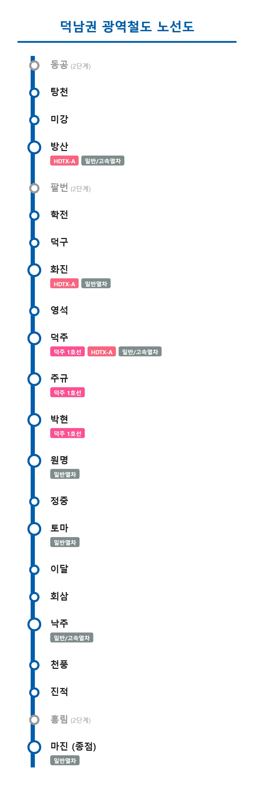

덕남권 광역철도
|
|||
|
 이미지 로딩 실패 (덕남권광역철도_노선도.webp)현재 공사중인 덕남권 광역철도 노선도
|
|||
| 노선 정보 | |||
|---|---|---|---|
| 노선 색상 | ■ 코레일 블루 (Korail Blue) | ||
| 운영 기관 | 한국철도공사 (Korail) | ||
| 개통 목표 | 2033년 (1단계) 미정 (2단계) | ||
| 기점 | 동공역 (2단계) 탕천역 (1단계) | ||
| 종점 | 마진역 | ||
| 역 수 | 22개 (1단계 19개 / 2단계 3개) | ||
| 노선 구성 | 덕빈선 (방산~낙주) 신설 지하 선로 (덕주 시내 구간) 마낙선 (낙주~마진) | ||
| 전철화 방식 | 교류 25,000V 60Hz 가공전차선 | ||
| 신호 방식 | ATP / ATS | ||
| 투입 차량 | 미정 (한국철도공사 통근형 전동차 도입 예정) | ||

1. 개요
"매일 아침 덕남대로에서 고통받는 150만 도민들의 유일한 구원줄이자, 방산-덕주-낙주-마진을 직결하는 거대한 대동맥"
한국철도공사가 전폭적으로 건설 중인 덕빈남도 권역의 거대 광역철도망. 2033년 1단계 구간(탕천~마진) 개통을 목표로 현재 공사가 절찬리에 진행 중이다.
과거 디젤 매연을 뿜으며 무궁화호급 일반열차만 드문드문 다니던 노후 철도인 덕빈선과 마낙선을 최신 규격으로 개량 및 복선전철화하고, 여기에 더해 도청 소재지인 덕주시 시내 구간은 아예 대규모 자본을 투입해 대심도 신설 지하 선로를 파버려서 하나의 완벽하고 거대한 통근형 전철망으로 묶어버리는 야심 찬 프로젝트다.
2. 추진 역사 및 배경
덕빈남도의 핵심 3대 거점인 방산시, 덕주시, 낙주시, 그리고 핵심 물류 항구인 마진시는 지리적으로 아름답게 일렬로 늘어서 있음에도 불구하고 연계 대중교통망이 처참한 수준이었다. 특히 출퇴근 시간대만 되면 이들을 잇는 '덕남대로'와 주요 국도망이 차들로 꽉 막혀 거대한 주차장으로 변모하며 헬게이트가 열렸다. 기존 철도는 낡아빠진 선형과 1시간에 1대 올까 말까 한 극악의 배차 간격 탓에 시민들에게 완전히 외면받고 있었다.
이에 덕빈남도청 주도로 "덕남권 3대 거점(방산-덕주-낙주)과 물류 종착지(마진)를 아예 전철로 하나로 뚫어버리자"는 원대한 계획이 수립되었다. 물론 그 과정이 결코 순탄치만은 않았다.
2.1. 석형준 도정의 고의 지연과 버스 카르텔 결탁 의혹
⚠️ 흑역사: 부패한 석형준 도정의 훼방과 2년의 허송세월
전임 조삼현 도정 시절, 본래 이 사업은 압도적인 수요를 바탕으로 예비타당성조사까지 무난하게 프리패스하며 2024년 착공을 목표로 순조롭게 속도를 내고 있었다. 그러나 2022년 선거에서 당선된 제38대 석형준 도지사가 취임하자마자, 갑자기 '예산 낭비 전면 재검토'를 지시하며 멀쩡한 사업이 무기한 올스톱되는 대참사가 벌어졌다.
석형준이 내세운 표면적인 이유는 예산 절감이었으나, 실상은 기득권 시외버스 업체들로 구성된 이른바 '버스 카르텔'과의 끈적한 검은 커넥션 때문이었다. 광역철도가 개통될 경우 시외버스 승객이 급감해 직격탄을 맞게 될 하정여객 등 대형 버스 회사들이 석형준 측에 막대한 뇌물과 선거 로비 자금을 제공했고, 석형준은 이들의 독점적 수익 구조를 지켜주기 위해 150만 도민의 염원인 광역철도 사업을 고의로 방해하고 몽니를 부린 것이다.
심지어 이 추악한 로비 과정에서 효빈시의 대표적인 극우 혐오 빌런이자 적폐의 온상인 윤재훈이 중간 브로커 역할을 수행하며 뒷돈을 배달했다는 충격적인 사실까지 훗날 폭로되었다. 결국 2024년에 화려하게 떴어야 할 첫 삽은 기약 없이 미뤄졌고 도민들의 분노는 극에 달했다.
결국 2026년 지방선거에서 벼르고 벼르던 도민들의 심판이 내려져, 김영산 지사가 무려 61.5%라는 압도적인 득표율로 석형준을 처단하며 도정을 탈환했다. 김영산 지사는 취임 직후 이 노선을 다시 최우선 핵심 현안으로 지정하였고, 마침내 2026년 말 신속 착공이 확정되며 죽어가던 프로젝트가 부활했다. 하마터면 부패한 버스업체 임원들 배불리려다 덕남권 전체가 영원히 교통지옥으로 썩어갈 뻔했다
3. 노선 구조 및 특징
이 노선은 단순히 기존 선로에 전선만 깔고 열차만 굴리는 재탕 수준이 아니다. 탕천, 학전, 정중, 진적 등 과거 여객열차가 하루에 몇 번 안 서거나 화물만 취급하며 버려져 있던 역들이 최신식 광역철도 전용역으로 화려하게 리모델링되어 부활하며, 방산역과 덕주역, 화진역 등 거점역에서는 향후 들어올 HDTX-A 및 KTX, SRT 등 고속열차와의 환승 저항을 최소화하도록 치밀하게 설계되었다.
3.1. 원도심과 신도심의 입체적 융합 (덕주 시내)
이 광역철도의 진정한 하이라이트이자 막대한 예산을 집어삼킨 구간이 바로 덕주시 시내 구간(영석~박현)이다. 과거 덕빈선 일반철도는 시내 진입을 피하기 위해 덕주역 하나만 덩그러니 거치고 외곽으로 빙 둘러 빠져나가던 형태였다. 하지만 광역철도는 과감하게 대심도 지하 신설 선로를 파고 덕주시 지하를 쑤시고 들어간다.
도청 소재지이자 근현대 역사가 살아 숨 쉬는 원도심인 덕주역(덕산구)을 찌른 뒤, 선로를 크게 비틀어 현재 억소리 나는 집값과 엄청난 인구 밀도를 자랑하는 신도심 조전구 한복판의 박현역까지 뚫어버린다. 특히 덕주역, 주규역(간접환승), 박현역 등 노른자위 구역에서 연속으로 덕주 1호선(핫핑크)과 환승되도록 설계되어 있어, 개통 시 덕주시의 출퇴근 대중교통망을 완전히 뒤집어놓을 초강력 파급력을 예고하고 있다.
4. 2단계 연장 사업 (기적의 팔번역)
당초 국토부와 철도공사의 깐깐한 사업 계획상 이 노선은 방산시 탕천동(탕천역)에서 칼같이 끊길 예정이었고, 그 동쪽의 하정시 구역은 지리적, 경제적 이유로 100% 패싱당할 운명이었다. 그런데 전혀 예상치 못한 서브컬처 오타쿠들의 반란이 이 거대한 국책 철도망의 운명과 도면을 통째로 뒤바꿔놓았다.
🎸 오타쿠 파워가 뚫어버린 철도: 신태양 시장 참교육 사건
하정시 팔번면 해령리는 인기 서브컬처 밴드 프로젝트 BanG Dream!의 Ave Mujica 소속 캐릭터인 야하타 우미리(八幡 海鈴)와 한자 표기까지 완벽하게 동일하다는 점이 네티즌들에게 발굴되며 단숨에 서브컬처 성지로 급부상했다. 인구 유출로 죽어가던 마을을 살리려던 청년회가 이를 기회 삼아 콜라보 기획을 준비했으나, 꼰대이자 극성 오타쿠 혐오자인 신태양 하정시장이 "신성한 도시에 천박한 일본 만화가 웬 말이냐"며 재떨이를 집어 던지며 기획을 강제로 파투내고 징계 보복 행정까지 저지르는 만행을 부렸다.
이에 극대노한 전국의 팬덤과, 절호의 지역 발전 기회를 날려버려 빡친 지역 주민들이 대동단결하여 제9회 지방선거에서 야당인 민주당 후보에게 무려 56.8%의 몰표를 던지는 사상 초유의 반란을 일으켰다. 뼛속까지 보수 텃밭인 하정시 한복판에서, 그것도 오타쿠 혐오 발언 하나 때문에 시장이 낙선하는 지옥을 선사한 것이다.
이 역대급 선거 반란 이후, '우미리 성지순례' 특수로 팔번면에 전국 단위 관광객이 말 그대로 폭발적으로 몰려들기 시작했다. 여기에 팔번면이 원래 하정시 면 단위 인구 1위(9,438명)라는 탄탄한 배후 출퇴근 수요를 가지고 있었음이 재조명되면서, 불가능해 보였던 노선 연장의 경제성(B/C)이 단숨에 1.0을 돌파해 버렸다. 결국 "팔번면을 꺾어서라도 광역전철 역을 지어야 한다"는 여론이 압도적으로 수용되어, 2단계 계획(동공~팔번~흥림)에 팔번역(DN104)이 정식으로 추가되는 기적이 일어났다. 이것이 우미리의 묵직한 베이스 슬랩(물리)이 국가 철도망 도면까지 뜯어고친 웅장한 위엄이다.
5. 역 목록
| 역번호 | 역명 | 한자 역명 | 환승 노선 | 승강장 형태 | 소재지 | 비고 |
|---|---|---|---|---|---|---|
| DN100 | 동 공 | 東 空 | - | ■││■ (상대식) | 방산시 동공면 대양리 | 2단계 계획 |
| DN101 | 탕 천 | 湯 泉 | 일반열차 (개통시 광역전용) | ■││■ (상대식) | 방산시 탕천동 428 | 1단계 (기존) |
| DN102 | 미 강 | 美 江 | - | ■││■ (상대식) | 방산시 미강동 282 | 1단계 (신설) |
| DN103 | 방 산 | 方 山 |
일반열차
고속열차
 (예정) (예정) |
│■││■│ (쌍섬식) | 방산시 청전동 513 | 1단계 (기존) |
| DN104 | 팔 번 | 八 幡 | - | ■││■ (상대식) | 하정시 팔번면 일봉리 | 2단계 계획 (우미리 성지 연장) |
| DN105 | 학 전 | 鶴 田 | 일반열차 (개통시 광역전용) | ■││■ (상대식) | 덕주시 덕산구 학전면 인간리 322 | 1단계 (기존) |
| DN106 | 덕 구 | 德 口 | - | ■││■ (상대식) | 덕주시 덕산구 덕구면 덕구리 | 1단계 (신설) |
| DN107 | 화 진 | 花 津 |
일반열차
(예정) |
■││■ (상대식) | 덕주시 덕산구 화진동 312 | 1단계 (기존) |
| DN108 | 영 석 | 榮 石 | - | ■││■ (상대식) | 덕주시 덕산구 영목동 | 1단계 (신설 선로) |
| DN109 | 덕 주 | 德 州 |
 일반열차
고속열차
(예정)
일반열차
고속열차
(예정) |
│■││■│ (쌍섬식) | 덕주시 덕산구 중앙로 1 | 1단계 (기존) |
| DN110 | 주 규 | 朱 規 |
주기역 (간접환승)
|
■││■ (상대식) | 덕주시 덕산구 주기동 | 1단계 (신설 선로) |
| DN111 | 박 현 | 朴 峴 |
|
■││■ (상대식) | 덕주시 조전구 박현로 5 | 1단계 (신설 선로) |
| DN112 | 원 명 | 原 明 | 일반열차 | ■││■ (상대식) | 덕주시 덕산구 원명읍 은린리 422 | 1단계 (기존) |
| DN113 | 정 중 | 正 中 | - | ■││■ (상대식) | 덕주시 덕산구 정중면 사곡리 23 | 1단계 (신설) |
| DN114 | 토 마 | 土 馬 | 일반열차 | ■││■ (상대식) | 낙주시 이파동 1228 | 1단계 (기존) |
| DN115 | 이 달 | 伊 達 | - | ■││■ (상대식) | 낙주시 이달동 | 1단계 (신설) |
| DN116 | 회 삼 | 繪 森 | - | ■││■ (상대식) | 낙주시 회삼동 | 1단계 (신설) |
| DN117 | 낙 주 | 樂 州 | 일반열차 고속열차 | │■││■│ (쌍섬식) | 낙주시 엽산동 87 | 1단계 (기존) |
| DN118 | 천 풍 | 川 豊 | - | ■││■ (상대식) | 낙주시 천풍동 | 1단계 (신설) |
| DN119 | 진 적 | 晋 迪 | 일반열차 (개통시 광역전용) | ■││■ (상대식) | 낙주시 진적읍 두진리 421 | 1단계 (신설) |
| DN120 | 흥 림 | 興 林 | 일반열차 (개통시 광역전용) | ■││■ (상대식) | 낙주시 흥림면 소양안리 481 | 2단계 계획 |
| DN121 | 마 진 | 馬 津 | 일반열차 | │■││■│ (쌍섬식) | 마진시 마진2동 고곡동 281 | 1단계 계획 |
6. 여담
- 본래 덕주시내 구간은 막대한 예산 문제로 구도심 위주로 지상 선로만 활용하며 대충 지나갈 뻔 했으나, 신도심인 조전구의 폭발적인 인구와 출퇴근 교통 체증을 무시할 수 없었기에 천문학적인 대심도 굴착 예산을 투입해서라도 시내 한복판을 관통하는 "신설 지하 선로" 방식을 극적으로 택하게 되었다. 알짜 환승역인 박현역과 주규역 인근 아파트 단지들은 삽을 뜨기도 전부터 벌써 집값이 폭등하고 있다.
부동산 불패의 법칙 - 석형준 전 도지사는 광역철도 사업을 고의로 방해하고 몽니를 부릴 당시 "적자투성이 덕주 1호선도 당장 메워버려야 할 판인데 무슨 놈의 광역철도냐"라는 역대급 망언을 내뱉어 십자포화를 맞은 바 있다. 그러나 실제로 덕주 1호선의 적자폭은 전국 도시철도 중에서도 매우 훌륭하게 관리되는 양호한 수준이었으며, 대중교통의 기본인 공공성을 밥 말아먹은 이 발언은 당시 부산교통공사나 서울교통공사 등 타 지자체 철도 관계자들마저 혀를 내두르게 만들었다.
정작 본인은 쓸모없는 사우나 골프장 짓는다고 도민 세금 수천억을 슈킹했다 - 해당 노선은 명백히 한국철도공사(Korail) 관할 노선이므로 덕주 1호선의 공식 마스코트 이덕희의 개입은 없을 것으로 보였으나... 코레일과 덕주도시철도공사 간의 환승 체계 협약이 끈끈하게 이루어질 경우 코레일의 공식 캐릭터인 전노아와 이덕희가 어떻게 엮일지 서브컬처 팬덤에서 기대 반 걱정 반의 여론이 들끓고 있다.
빛노아의 기운이 덕남권 지하 깊은 곳까지 뻗칠 것인가
7. 각주
- [1] 2단계 구간은 동공역과 팔번역, 흥림역을 포함하며, 향후 예비타당성조사 결과에 따라 개통 시기가 조정될 수 있다. 특히 팔번역은 하정시장의 뻘짓 덕분에 빡친 지역 주민, 정치권, 그리고 전국의 덕후들이 대동단결하여 국가 계획에 억지로(?) 욱여넣은 기적의 역이다.